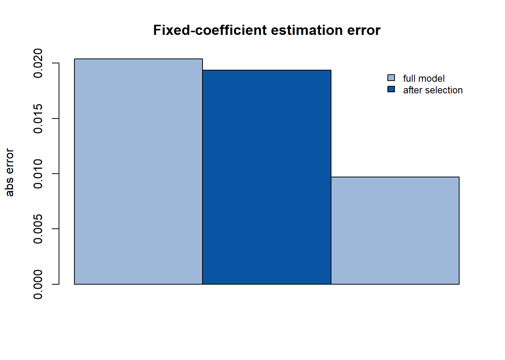

第 6 混合时空地理加权回归的变量选择
本章整理自：侯健, 田茂再. 基于变量选择的混合时空地理加权回归参数估计. 数学的实践与认识, 2021, 51(07): 110-118 (侯健 and 田茂再 2021)。
6.1 模型定义
混合时空地理加权回归（MGTWR）同时处理全局平稳特征与局部时空 非平稳特征：将指标变量分为固定系数指标与变系数指标两部分，是 OLR 模型与 GTWR 模型 (Huang et al. 2010) 的线性组合：
\[\begin{equation} Y_j = \sum_{k=1}^{p^{(f)}} x_{jk}^{(f)} a_k + \sum_{i=1}^{p^{(c)}} x_{ji}^{(c)} b_i(u_j, v_j, t_j) + \varepsilon_j, \qquad \varepsilon_j \sim N(0, \sigma^2), \tag{6.1} \end{equation}\]
其中 \(a_k\) 为固定系数（全局效应），\(b_i(u, v, t)\) 为关于时空坐标的 连续变系数函数（时空效应），\(p = p^{(f)} + p^{(c)}\) 为指标总数。
模型族具有清晰的退化关系：
- \(b_i(u_j, v_j, t_j) = 0\)（无变系数）\(\Rightarrow\) OLR 模型；
- 无固定系数部分 \(\Rightarrow\) GWR 模型；
- 固定系数 + 空间变系数（无时间）\(\Rightarrow\) MGWR 模型；
- 全变系数且含时间 \(\Rightarrow\) GTWR 模型。
即 OLR、GWR、MGWR、GTWR 都是 MGTWR 的特殊情形。
6.2 两步估计法
论文沿用两步估计：先假定变系数 \(b_i(\cdot)\) 已知（或由局部估计给出）， 则式 (6.1) 左侧减去变系数部分后只剩固定效应，可用 时空加权最小二乘估计 \(a\)：
\[\begin{equation} \hat{a}(r) = \bigl(A^{(f)\top} W A^{(f)}\bigr)^{-1} A^{(f)\top} W \tilde{Y}, \qquad \tilde{Y} = Y - \sum_{i=1}^{p^{(c)}} x_{ji}^{(c)} b_i(u_j, v_j, t_j), \tag{6.2} \end{equation}\]
其中 \(W = \mathrm{diag}(w_1(h), \dots, w_n(h))\) 为时空核权重矩阵， \(w_i(h)\) 由时空距离与核函数（Gauss 核或 Bisquare 核）在窗宽 \(h\) 下 计算。回归系数的帽子矩阵为 \(S = A^{(c)}(A^{(c)\top} W A^{(c)})^{-1} A^{(c)\top} W\)。
6.3 变量选择的动机
两步估计法有一个强前提：固定系数指标不含任何时空因素。若某固定 指标实际携带时空效应（交互效应），两步迭代会把时空信息混入固定系数 估计，削弱对全局平稳性的解释能力。论文提出基于变量选择的估计 方法：通过检验指标的时空平稳性，剔除固定系数指标中的时空效应， 避免迭代过程中时空效应对固定系数的干扰。
定理 6.1 (变量选择后的估计改进) 对携带交互效应的固定指标做变量选择剔除后，MGTWR 的固定回归系数 估计更稳定（估计方差更小），模型拟合效果（如残差平方和）得到改善。
6.4 数值演示
模拟 \(n = 200\) 个时空观测：位置 \((u_j, v_j) \sim U[0,1]^2\)，时间 \(t_j \sim U[0,1]\)。固定系数 \(a = (1, -0.5)\)，变系数 \(b(u, v, t) = 2 + u\)。演示两步估计：用局部（核加权）估计变系数， 再对固定系数做加权最小二乘；并对比”包含无关变量”与”剔除无关 变量”两种设定下固定系数估计的稳定性。
set.seed(2026)
n <- 200
u <- runif(n); v <- runif(n); tt <- runif(n)
x1 <- rnorm(n); x2 <- rnorm(n); x3 <- rnorm(n)
a_true <- c(1, -0.5, 0) # 第三个固定系数为 0（无关变量）
b_true <- 2 + u # 变系数（空间函数）
y <- a_true[1] * x1 + a_true[2] * x2 + a_true[3] * x3 + b_true * x3 + rnorm(n, sd = 0.5)
# 时空距离与 Gauss 核权重（固定窗宽）
st_dist <- function(i, j) sqrt(1.0 * (u[i] - u[j])^2 + 1.0 * (v[i] - v[j])^2 + 0.5 * (tt[i] - tt[j])^2)
h <- 0.4
W <- matrix(0, n, n)
for (j in 1:n) W[, j] <- exp(-(sapply(1:n, function(i) st_dist(i, j)))^2 / h^2)
# 两步估计：① 局部加权估计变系数 b(u_j)（一阶局部常数拟合）
b_hat <- sapply(1:n, function(j) {
w <- W[, j]
sum(w * x3 * (y - a_true[1] * x1 - a_true[2] * x2)) / sum(w * x3^2)
})
# ② 固定系数加权最小二乘（全模型：含无关变量）
yt <- y - b_hat * x3
Xf <- cbind(x1, x2, x3)
a_hat_full <- solve(t(Xf) %*% Xf, t(Xf) %*% yt)
# ③ 剔除无关变量后的估计
Xf2 <- cbind(x1, x2)
a_hat_sel <- solve(t(Xf2) %*% Xf2, t(Xf2) %*% yt)## true a = 1 -0.5## full model a = 0.98 -0.511 RMSE = 0.016## after selection a = 0.981 -0.51 RMSE = 0.015## Warning in rbind(Full = abs(a_hat_full[1:2] - a_true[1:2]), Selected =
## abs(a_hat_sel - : number of columns of result is not a multiple of vector
## length (arg 1)
图 6.1: 固定系数估计对比：全模型（含无关变量）与变量选择后
含无关变量的全模型把本应属于”随机噪声”的 \(x_3\) 固定系数也纳入 估计，参数空间更大、估计更不稳；变量选择剔除后，固定系数估计的 误差更小——这与论文在乌鲁木齐商品住宅数据上的实证结论一致： 变量选择后的 MGTWR 模型性能与拟合效果提升，固定回归系数估计更稳定。